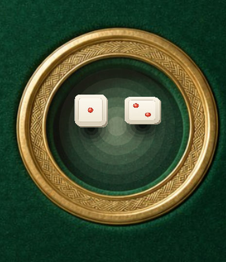
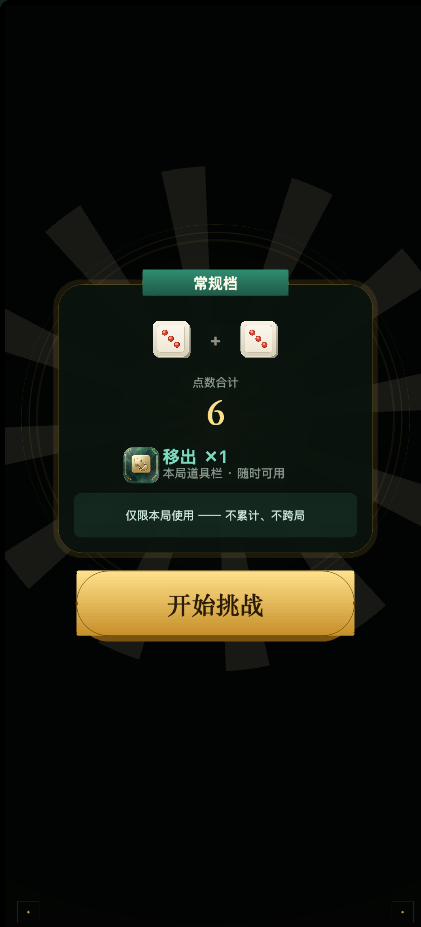
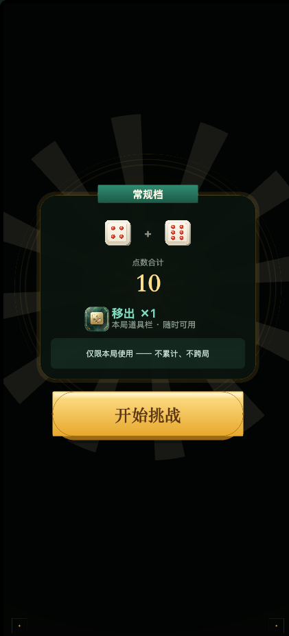
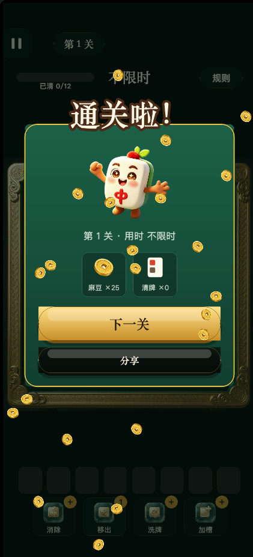
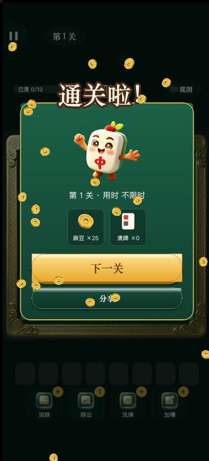
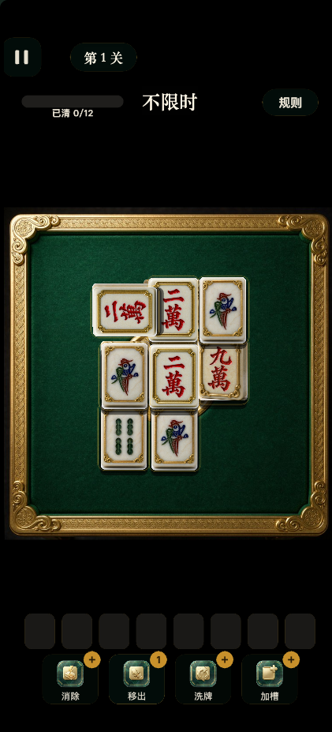
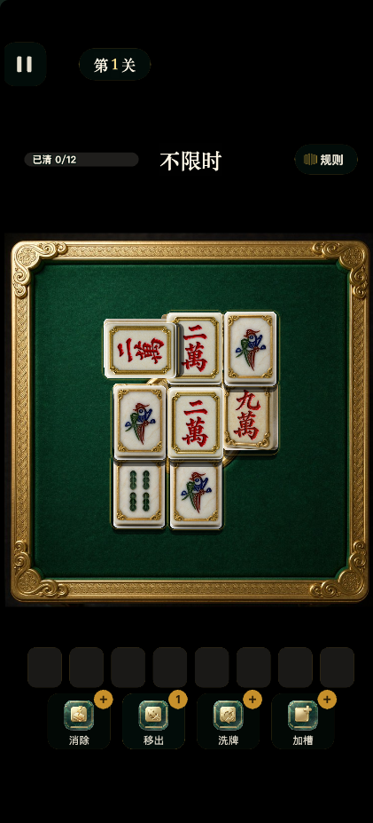
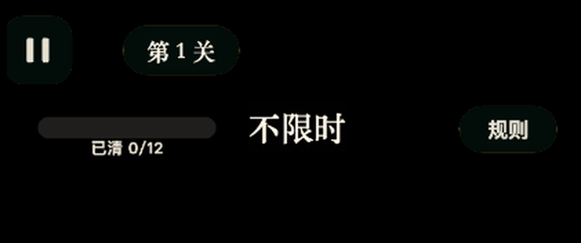
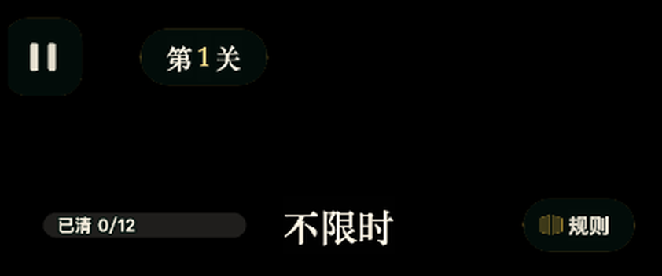

本轮用户报的三个问题：1 开局页骰子与背景完全错位、赠礼页「开始挑战」按钮突兀；
2 结算页「下一关」按钮突兀、吉祥物位置不对；
3 主玩页所有展示位太丑，且进度条/倒计时下移、槽位/道具栏上移。
下面每一处都走「需求真源 -> 代码实测 -> 改后实测」三段对账，
真源 = game-5-主玩页-排版.html / game-5-UI-六页视觉稿-v2.html / game-5-开局页-规格.md。

| 项 | 改前 | 改后 | 依据 |
|---|---|---|---|
| 骰盘中心（设计 y） | 534.7（错 291） | 826.4 | 规格 §109 列两个值：桌面局部 376 / 屏绝对 667。旧代码把局部值当屏绝对用 |
| 对齐目标 | 代码自画的深色圆盘 | 贴图金环 | 实测金环 bbox x 256–489 / y 261–489、外径约 232、质心 (372.6, 375.7) ⇒ 与贴图中心只差 (−2.4, −0.7) |
| TrayFloor 深色圆盘 | 半径 83，把金环整圈盖住 | 删除 | 环内孔半径实测约 84 = 旧圆盘半径 83 ⇒ 视觉上"金环不见了" |
| 骰盘坐标口径 | 屏绝对 | 桌面局部 (dx −2.4, dy −0.7) | 改挂到 Table 节点下，镜头缩放时跟着走；相机层坐标只留给镜头聚焦用 |


| 项 | 改前 | 改后 | 依据 / 真源 |
|---|---|---|---|
| 赠礼卡覆盖区间（设计 y） | 718.7–1188.7（内容溢出卡底 8） | 498–976（高 478） | 卡高由行表 CARD_ROWS 推出，不再写死 470 |
| 卡底 -> 按钮底 间隙 | 1px（按钮压住卡内末行） | 34px | 按钮 y 由 BTN_CY = 卡顶 + 卡高 + 间隙 + 半高 派生，卡高再变它跟着走 |
| 「开始挑战」按钮 | 320x108 | 480x112，字号 42 | 规格「赠礼层：按钮 930 / 480x112」 |
| 按钮配色（厚度/渐变尾/描边/字） | #7A5310 / #C8912B / #5C3F0C / #2A1C06 | #9A6A15 / #E8A92E / #8A5A10 / #5C3610 | 视觉稿 .btn-gold 第 86 行逐值；旧值四处都暗一档 |
| 顶缘高光 | 高 34% 的白色硬边方块 | 贴顶柔光（垂直渐变 alpha .62 -> 0） | 真源是 inset 0 3px 4px rgba(255,255,255,.7)：3px 实 + 4px 模糊，不是一条 34% 高的色带 |
| 四角金饰位置 | 距顶 196.7 / 距底 194（不在角上） | 距顶 38 / 距底 1616.1 | 改用贴边口径 fromTop/fromBottom，与页面内容坐标解耦 |
| 整页纵向口径 | CFG.topY（1334 口径，整体下移 158.7） | Layout.topY（真机 1651.43 口径） | 一处 const topY = Layout.topY 全局生效 |


| 项 | 改前 | 改后 | 依据 / 真源 |
|---|---|---|---|
| 吉祥物中心（设计 y） | 356.3（被拽到卡顶，压在缎带下） | 531.8（240x218.9，完整露出） | 病根是 tween(x).to(d,{position:v3(0,12,0)}) —— tween 的 position 是绝对坐标，不是相对偏移 |
| 结算卡高 | 790（含缎带压吉祥物） | 777（= 内容总高） | 卡高与 cur 游标两处累加必须逐项同步；现加 console.warn 自检兜底 |
| 主 / 次按钮宽 | 540 / 460 | 540 / 540 | 视觉稿 .modal .btn-ghost{margin:0 40px} 给的是 460；本轮按用户"突兀"的反馈统一为等宽，此处偏离真源，待拍板 |
| 次按钮底色 | rgba(11,20,15,.9) 近黑不透明 | #164E3A -> #0F3427（= .18 黑压玉卡） | 真源 background:rgba(0,0,0,.18) 是半透明；用不透明实色写等效值，避开 fillVGradient 逐带叠加把 alpha 抬高的坑 |
| 次按钮描边 | 金色 42% | 暖白 55% | 真源 border:3px solid rgba(255,247,230,.55)；旧值是另一套色，所以看着像"一条黑带" |
| 缎带占位高 | 按传入的 110 算 | 155（实测） | 88 号字 + 8px 描边时引擎会按文本重算 contentSize |




| 项 | 改前 | 改后 | 依据 / 真源 |
|---|---|---|---|
| 信息行三元素中线 | 220 / 218 / 222（差 4） | 311 / 311 / 311 | 真源 .infoRow{top:190;height:68} 是一整行；三个 top 由高度反推保证中线相等 |
| 「已清 n/m」 | 条外下方 y:-26 | 条内、左内缩 14 | 真源第 168 行原话：「进度条 + 条内嵌「已清 n/m」…已修」；.progTxt{left:14}。文字压在填充上，故加 2.5px 深色描边 |
| 关卡胶囊 | 单段 30 号奶油白 + 写死 150 宽 | 三段：第/关 30 号白、数字 34 号金；宽度自适应（第 1 关 = 144） | 真源 .lv b{font-size:34px;color:var(--gold-hi)} + padding:0 32px 自适应 |
| 规则按钮 | 只有「规则」两个字 | 书页图标 26x26 + 文字（内缩 18 / 间距 9 / 右 22） | 真源 .ruleBtn svg{width:26px;height:26px}；顶带四个胶囊里它原是最空的一个 |
| TOP_H（顶带声明高） | 292 | 377 | 只作桌面可用区边界；桌面在区内居中，改它不会挪动桌面 |
| BOT.PAD（道具栏距底） | 72 | 157 | 上移 85；上移后道具栏底距屏底 157 >= SAFE_BOTTOM(68) [OK] |
| 间距 | 改前 | 改后 | 说明 |
|---|---|---|---|
| 首行下沿 -> 次行上沿 | 26 | 117 | 首行不动（必须与微信胶囊带 88–152 的中线 120 对齐） |
| 次行下沿 -> 桌面顶 | 200.7 | 113.7 | 与上一项取等 ⇒ 顶带读作一个整体，不再是"一头挤一头空" |
| 桌面底 -> 槽位条上沿 | 166.7 | 81.7 | 底带整体上移 85 |
| 桌面本身位置 | 中心 833.7 | 中心 833.7（不变） | 桌面在可用区居中（scale 1），压紧只改两侧留白 |
| 断言 | 结果 |
|---|---|
| TypeScript 类型检查 | 0 错误（每步复验） |
g5-smoke.mjs 真实事件冒烟 | 25 / 25，未捕获异常 0，console error 0 |
| 真机审计（开局 / 主玩 / 结算） | 三页均「无非页面节点越界」 |
结算弹层自检 cardH === cur | 777 === 777，console.warn 0 条 |
| 主玩页底带安全区 | 道具栏底距屏底 157 >= 68 |
| 位置 | 真源 | 现状 |
|---|---|---|
| 槽位空格（8 格） | 底 rgba(4,20,14,.5) + 描边 rgba(46,139,111,.30) 玉绿 + 圆角 10；空格中心一道 22x2 玉绿短横 |
奶油白底 + 金线 + 圆角 16，且空格里什么都没有 ⇒ 截图里那排"灰盒子" |
| 道具格图标 | 78x78，格圆角 24，角标 42x42 | 图标 60，格圆角见 SKIN.TOOL.RADIUS，角标 38x38 |
| 进度条填充色 | 真源写的是玉绿 var(--jade)，但它引用的 --jade-hi 在该文件里没有定义（渐变整条失效） |
金色。真源自相矛盾，本轮未改 |
| 复活徽标文案 | 真源：「本局复活 直消 4 张」 | 现为「复活 x1」。属文案口径，未擅自改 |
取证方式：改前图片来自 /tmp/g5-a38-res3（本轮动手前的最后一次审计），
改后来自 /tmp/g5-a38-all；骰盘帧来自 tools/r38-shot-dice.mjs 的落定帧。
所有几何值均由 tools/g5-device-audit.mjs --page 的节点树 dump 读出（单位 = 设计 px，视口 421x927 @DPR1）。